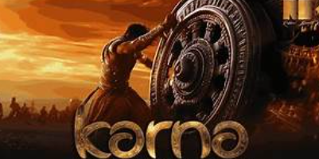

KARNA
Birth:
Karna was born to Kunti, the mother of the Pandavas, before her marriage,
due to a boon from Sage Durvasa. He was abandoned in a basket and found by Adhiratha,
a charioteer, and his wife Radha, who raised him as their own.
Training:
Karna trained under Drona, the royal teacher,
despite being a suta (charioteer's son), and became an expert archer.